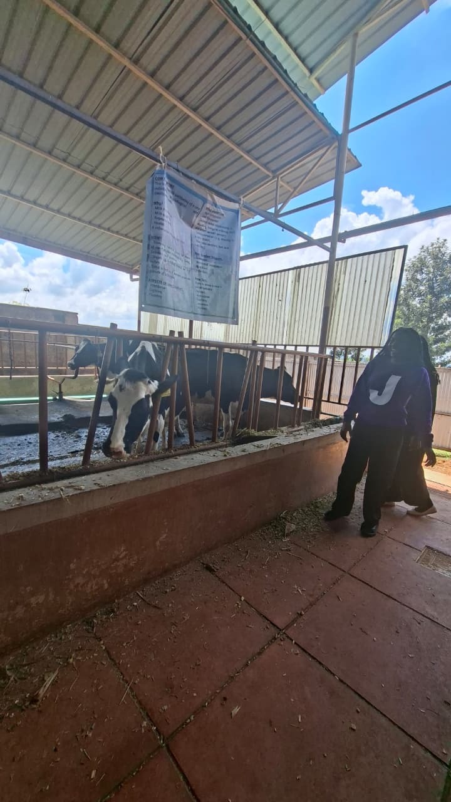
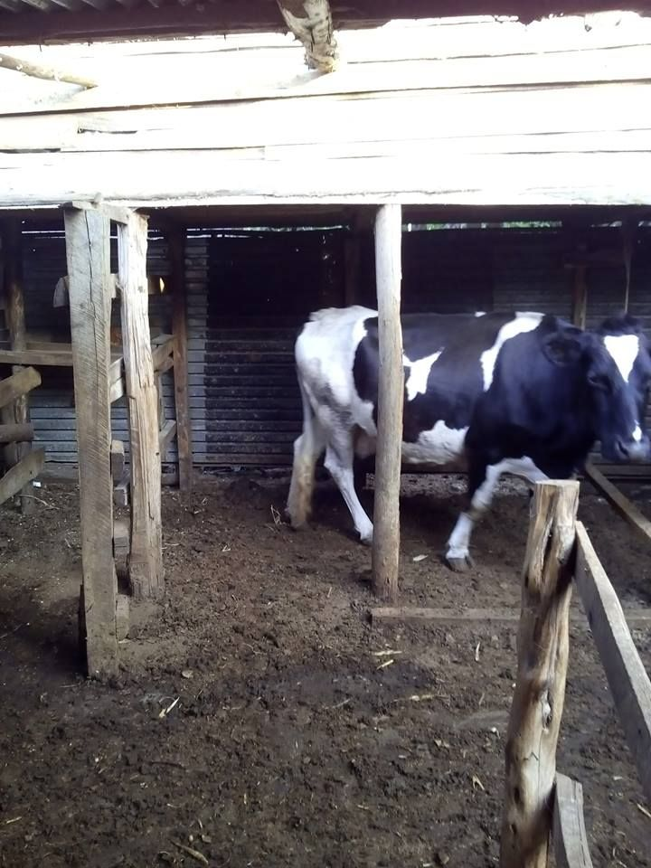
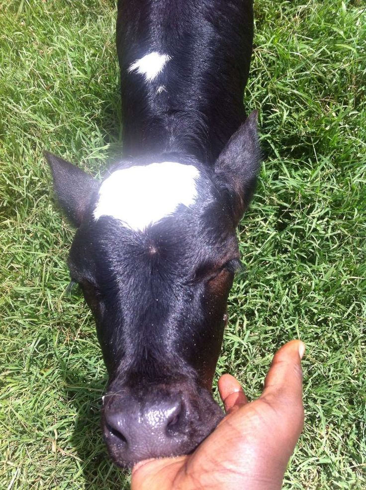
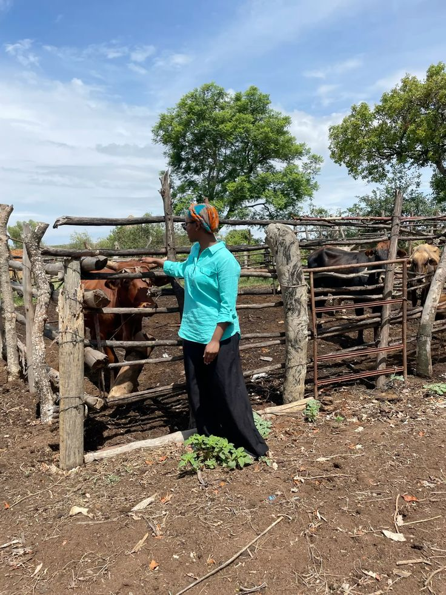

Banner

We supply milk county-wide!
Take a closer look!
Gallery

.jpg)


Our Story
Welcome to Baraka Farm, located in the beautiful landscapes of Kyaume, Makueni County.
We are a proud family of six dedicated to bringing 100% natural, premium-quality milk from our pasture to your doorstep.
Everything we do is 200% natural. Our cows are raised with care, grazing properly to ensure that every glass of Baraka Milk is the best youll ever have.
Our Pure Process
High quality milk starts with the cows . Here is how we bring nature's best directly to you:
- Grazing: Our cows freely roam on open green pastures in Kyaume, feeding on natural grass.
- Milking: We maintain sanitization standards during our daily milking routines to protect purity.
- Chilled & Fresh: The milk is chilled immediately after pasteurization to preserve its rich flavor.
- Distribution: Safely packed and distributed county-wide using good networks.
Dial A Delivery
Fill out the form below to register for delivery plans and have pure, farm-fresh milk delivered straight to your home or shop.